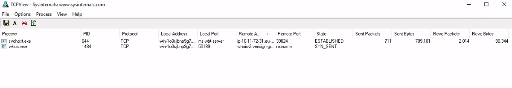

network utilities
Networking Utilities
TCPView
TCPView is a Windows program that will show you detailed listings of all TCP and UDP endpoints on your system, including the local and remote addresses and state of TCP connections. On Windows Server 2008, Vista, and XP, TCPView also reports the name of the process that owns the endpoint. TCPView provides a more informative and conveniently presented subset of the Netstat program that ships with Windows. The TCPView download includes Tcpvcon, a command-line version with the same functionality.
This is a good time to mention that Windows has a built-in utility that provides the same functionality. This tool is called Resource Monitor. There are many ways to open this tool. From the command line use resmon.
Command: Tcpview.exe

Whois
The Whois Command Line tool.
Command: whois.exe <IP_Address>